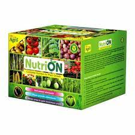
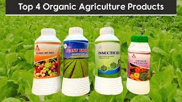

Our Products
We offer a wide range of agricultural products to meet your needs. Here are some of our most popular offerings:
 - Seeds: We offer a variety of high-quality seeds for crops such as corn, soybeans, wheat, and more.
- Fertilizers: Our fertilizers are specially formulated to provide the nutrients your crops need for optimal growth.
- Pesticides: We offer a range of effective pesticides to help you protect your crops from pests and diseases.
- Irrigation Systems: Our irrigation systems are designed to help you conserve water and improve crop yields.
- Farm Equipment: We offer a range of farm equipment, from tractors and harvesters to tillers and cultivators.
Contact us today to learn more about our products and how we can help you grow your business.